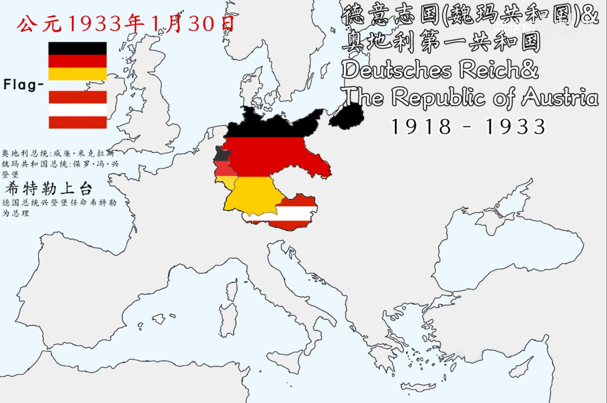
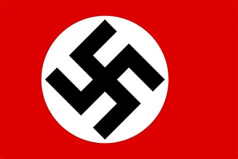
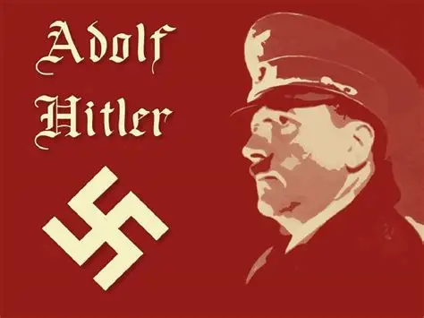

纳粹德国兴亡历程
点击事件查看详情

1933年 — 希特勒出任总理 希特勒第一届内阁合影
希特勒第一届内阁合影
1933年1月 — 纳粹上台
1933年1月30日，兴登堡任命希特勒为总理。国会纵火案后《授权法》通过，希特勒建立独裁统治，迅速重整军备突破凡尔赛条约限制，为日后的领土扩张奠定军事基础。

从崛起到毁灭

阿道夫·希特勒 · 第三帝国元首
1933年纳粹上台时，德国在欧洲的影响力不过方寸之地
接下来的十二年里，战争机器将吞噬整个欧洲
点击事件查看详情

1933年 — 希特勒出任总理
希特勒第一届内阁合影
1933年1月30日，兴登堡任命希特勒为总理。国会纵火案后《授权法》通过，希特勒建立独裁统治，迅速重整军备突破凡尔赛条约限制，为日后的领土扩张奠定军事基础。
巴巴罗萨计划初期取得重大胜利，德军深入苏联腹地，莫斯科近在咫尺。
轴心国控制欧洲大部分地区，日本在太平洋发动攻势，德国领土达到最大。
通过掠夺占领区资源，德国经济达到战时高峰，军工生产空前繁荣。
德军在斯大林格勒遭遇毁灭性失败，第6集团军全军覆没，标志东线转折。
英美空军开始战略轰炸，德国城市和工业设施遭受重创。
1944年盟军在法国北部登陆，开辟第二战场，西线崩溃开始。
苏军攻入柏林，希特勒自杀，第三帝国正式灭亡。
战后对纳粹战犯的审判，确立战争罪行和反人类罪的概念。
纳粹的溃败不仅是军事失败，更是极端意识形态的破产——它警示着民主制度的脆弱与极权主义的灾难性后果。
战后德国政府更迭频繁，经济崩溃叠加街头暴力，民众对民主制度失去信心，转向极端主义寻求出路。
1929年世界经济危机使德国失业率飙至30%，数百万中产一夜返贫，为纳粹提供了大量支持者。
出色的演讲能力和宣传技巧，精准捕捉了民众的愤怒与恐惧，将混乱转化为个人崇拜。
完善的基层党组织配合冲锋队——纳粹通过街头暴力与选举两手策略，系统性地夺取了权力。
巨额赔款、领土割让和"战争罪责"条款让德国人积压了强烈的民族仇恨，纳粹的复仇口号正中靶心。
英法对希特勒的扩张一再退让——从莱茵兰到苏台德——给了纳粹德国喘息和扩张的时间与空间。
魏玛时期共产党势力壮大，资产阶级和保守派将纳粹视为对抗红色革命的盾牌，从而选择了合作。
意大利法西斯的成功夺权为希特勒提供了可复制的模板，证明极权主义可以在现代国家中崛起。
"忘记历史的人，注定要重蹈覆辙。"
乔治·桑塔亚纳《理性的生命》